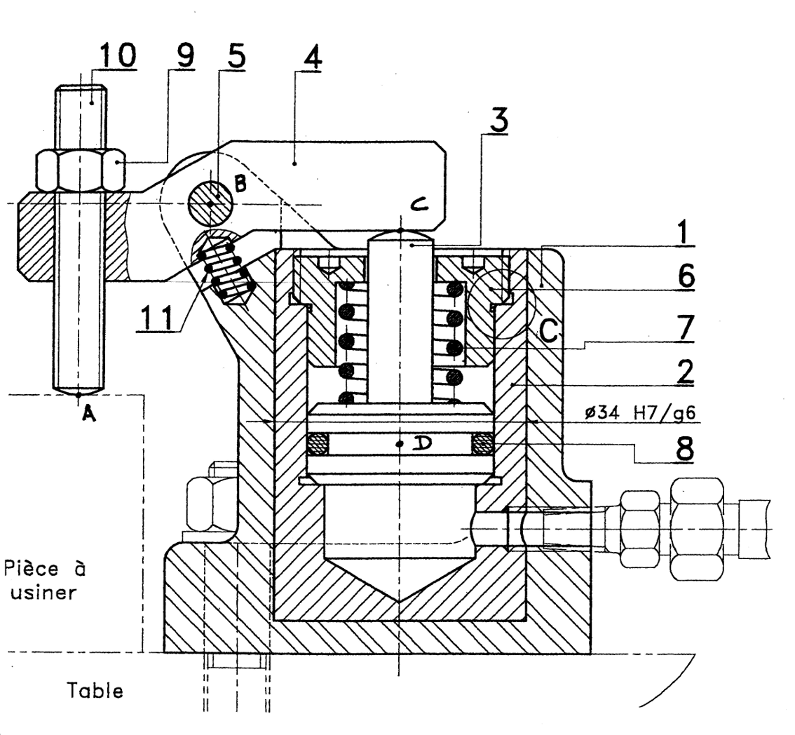
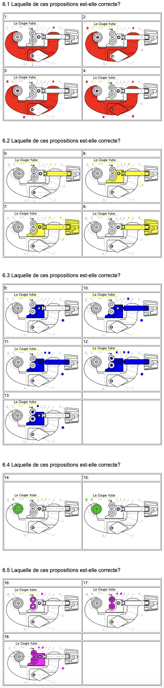
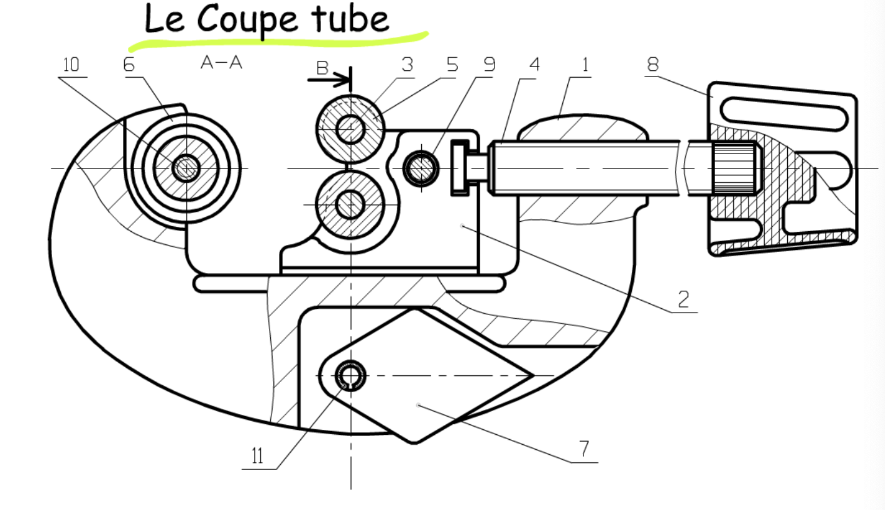
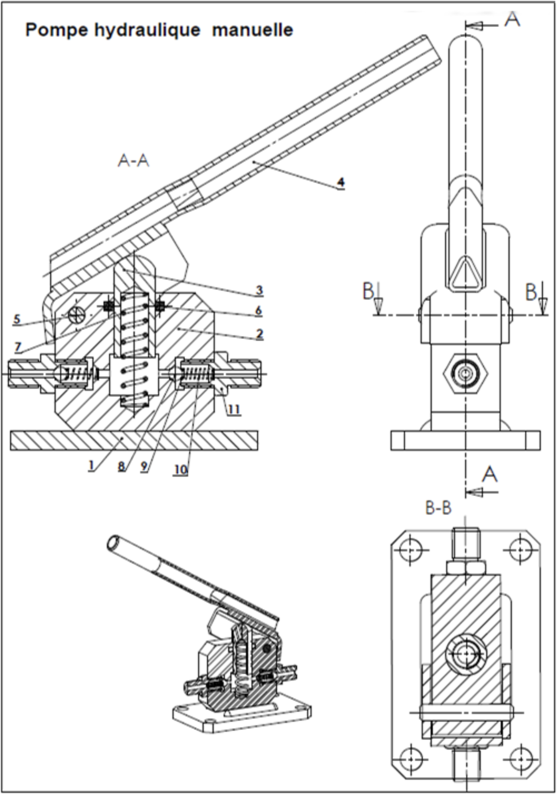
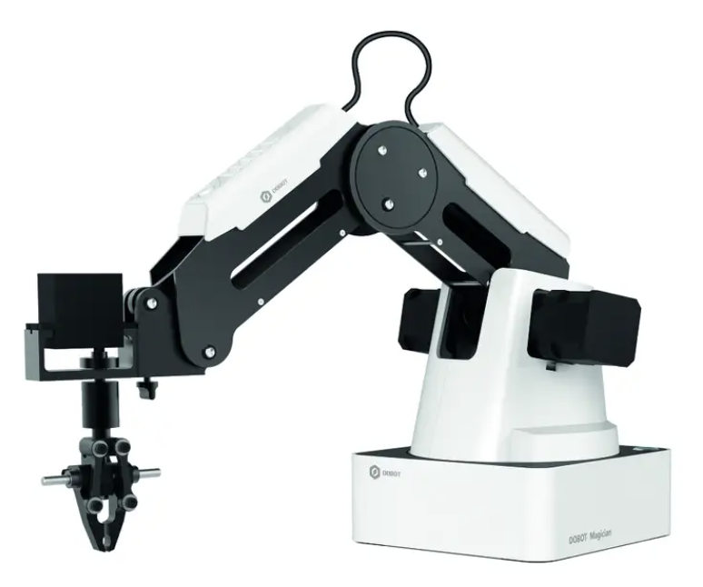
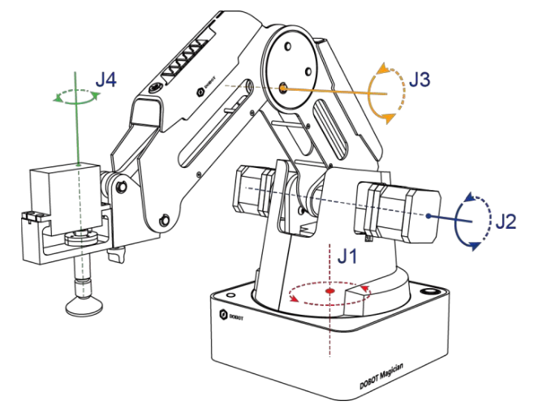
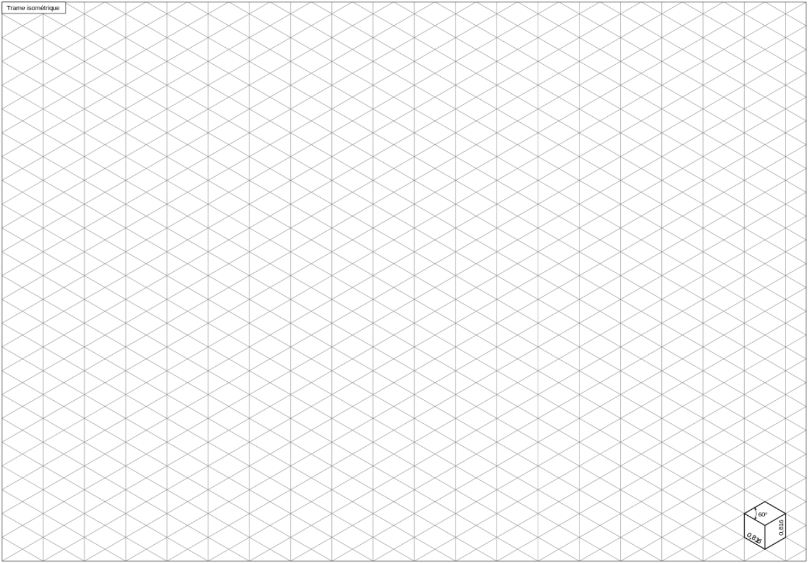

LES SCHÉMAS CINÉMATIQUES
PROBLÉMATIQUE ET OBJECTIFS
Pour représenter des mécanismes complexes nous avons besoin d’un langage qui décrive le système et le mobilités internes de celui-ci.
Objectifs :
- Se réapproprier une méthodologie (sur la cinématique)
- Utiliser la représentation à partir d'un plan.
- Représenter un système réel.
RESSOURCES
Voici le document réponse pour pouvoir répondre aux différentes questions :
MÉTHODOLOGIE ET RAPPELS
Regarder la vidéo et repondre aux questions
Question 1: Définissez ce qu'est une classe d'équivalence. Question 2: Notez les deux règles à respecter.
Application à la bride hydraulique. Regardez la vidéo pour comprendre le rôle et le fonctionnement de la bride hydraulique.
Question 3: Regrouper en coloriant les différentes classe d'équivalence de la pièce (bride hydraulique) ci-dessous.

Regardez la vidéo ci-dessous et répondez aux questions.
Question 4 : Notez les 4 étapes de la méthode pour réaliser un schéma cinématique Question 5 : Retrouvez (ou relevez) le schéma cinématique de la bride hydraulique
ENTRAINEMENT : LE COUPE TUBE
Nous allons maintenant étudier le coupe tube
Voici une petite vidéo pour comprendre comment on utilise le "coupe tube"

Question 6 : On va d'abord travailler classe d'équivalent par classe d'équivalent (une par une) en répondant au QCM ci-dessous:

Question 7 : Compléter maintenant avec différentes couleurs toutes les classes d'équivalence du coupe tube:

APPLICATION À PARTIE D'UN PLAN : LA POMPE HYDRAULIQUE MANUELLE
Le mécanisme présenté est une pompe hydraulique manuelle. Elle peut mettre en pression un circuit hydraulique qui contient de l’huile ou du fuel et permettre ainsi de tester la résistance à la pression du circuit, d’un clapet, d’un gicleur ou d’un injecteur. Cette pompe se manœuvre à la main à l’aide du levier 1. Elle est reliée au circuit hydraulique par les raccords 8.
Comment ça marche? Regarder la vidéo
Rappel de la méthode à suivre : * Etape 1: Colorier chaque sous ensemble d'une couleur différente puis définissez les groupes fonctionnels. * Etape 2: Graphe de liaisons et Indiquer le nom de la liaison * Etape 3: Dessiner le schéma cinématique (2D correspondant à la coupe A-A sur le plan) du mécanisme.
| Rep. | Nbre | Désignation |
|---|---|---|
| 1 | 1 | Corps |
| 2 | 1 | Chemise |
| 3 | 1 | Piston |
| 4 | 1 | Levier |
| 5 | 1 | Axe |
| 6 | 1 | Joint torique |
| 7 | 1 | Ressort |
| 8 | 2 | Bille |
| 9 | 2 | Coupelle ressort |
| 10 | 2 | Ressort |
| 11 | 2 | Raccord fileté |
Question 8 : Compléter les classes d'équivalence de la pompe sur les 3 schémas (en coupe) :

Question 9 : Faire le graphe des liaisons
Question 10 : Faire le schéma cinématique de la pompe
EN BONUS : UN SYSTÈME RÉEL (ÉVALUÉ)
Nous disposons du bras robot ci-dessous:


Vous avez à disposition des trames isométrique pour une éventuelle réalisation en 3D.
Conseil : Tâtonnez au brouillon avant la mise au propre
Question 11 : Faire le schéma cinématique 3D du bras robot.
